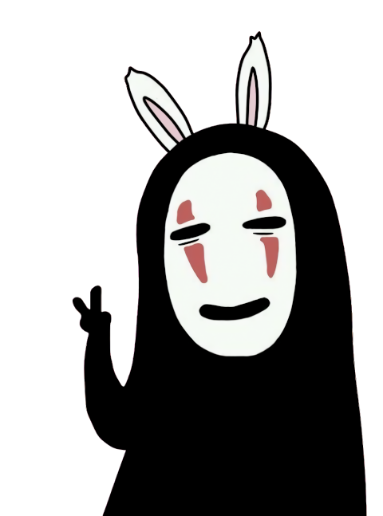

No-Face
No-Face is an enigmatic spirit in Spirited Away, known for his haunting mask-like face and ghostly, transparent form. Initially a quiet, solitary figure, No-Face’s character reflects the environment around him, absorbing both the greed and kindness he encounters in the bathhouse. He seeks companionship and understanding, though his nature shifts dramatically when faced with excess or isolation. No-Face embodies a mysterious longing for connection, symbolizing both vulnerability and transformation as he learns to balance his desires with a more grounded identity.
